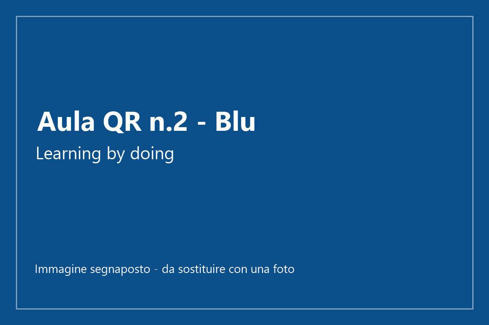

Qui non si impara soltanto ascoltando: si sperimenta, si prova, si sbaglia e si costruiscono soluzioni reali.
Le competenze tecniche degli ITS Academy (istituti tecnici superiori) si sviluppano attraverso laboratori, simulazioni, project work e attività pratiche.
Nel percorso di Cybersecurity Specialist si lavora su reti, sistemi informatici, protezione dei dati, analisi delle vulnerabilità e gestione delle minacce.
L'obiettivo è formare professionisti capaci di applicare subito ciò che hanno studiato nelle aziende, non solo di ripetere concetti teorici.
Il metodo ITS prevede infatti una forte componente pratica e una stretta collaborazione con le imprese del territorio.

Ultimo aggiornamento: 13/11/2026